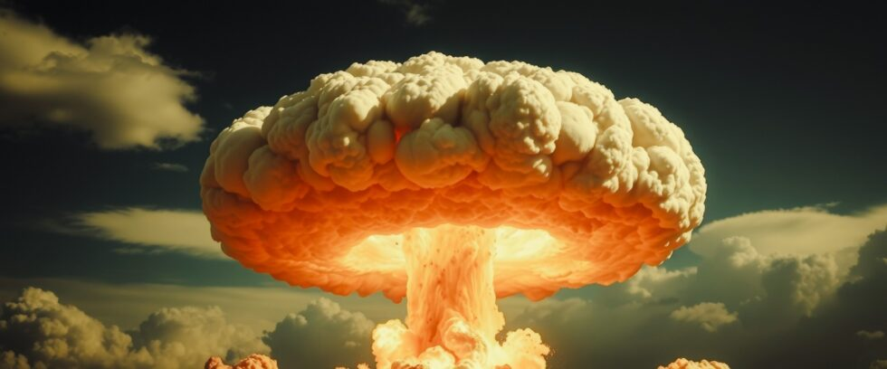

Beyond contemporary issues that dominate headlines, a greater threat lies – that of nuclear war. The Cold War, when nuclear annihilation seemed realistically possible, is over now. Yet decades later, nuclear weapons still threaten our lives and our civilization.
The Illusion of Safety
The end of the Cold War brought a sense of relief that the nuclear bullet had been dodged. But thousands of thermonuclear warheads still remain on high alert today, ready to launch on a moment’s notice. The doctrine of Mutually Assured Destruction (MAD), once considered a useful deterrent against nuclear aggression, now teeters on the brink of irrelevance in a multipolar world with shifting alliances.
Geopolitical Tensions
Recent years have seen the resurgence of nationalist ideologies, territorial disputes, and the erosion of arms control treaties. Those developments have increased the risk that accidental miscalculation or deliberate escalation could trigger a nuclear war.
Today, many analysts believe that our current situation is less stable than the Cold War ever was, back when circumstances were more easily defined. And the growing deployment of low-level nuclear weapons increasingly erodes the boundary between conventional and nuclear conflict by lowering the threshold for nuclear use.
An Existential Threat
So, why does this matter? A single nuclear weapon can bring widespread destruction, catastrophic loss of life, and lasting environmental consequences. But a nuclear war can trigger a nuclear winter that impacts agricultural food production to the point of mass starvation. Nuclear winter is the deadliest consequence of nuclear war.
The Need for Action
There is no option. We must confront the reality of nuclear weapons before it’s too late. Multilateral arms control talks are important, but it should be noted that conventional attempts at nuclear disarmament have failed in the past. A necessary ingredient was always missing: Regular people.
Surveys consistently show that three out of four people in the world today want nuclear weapons eliminated. If organized, those people would be the greatest political force ever assembled. Could that overwhelming advantage translate into winning ballot initiatives and political campaigns?
Conclusion
Military conflicts and contemporary issues like climate change demand our attention. But nuclear weapons can doom our civilization now. Our luck has held so far, but a day of reckoning will inevitably come if they are not eliminated.
Fortunately, our massive advantage in public opinion is powerful. Our Planet Project Foundation is working to convert that advantage into a powerful movement that can force reluctant leaders to disarm. After all, nothing has worked so far. Something new must be tried. Obtaining a chance for billions of people who dislike nuclear weapons to vote against them seems like a good place to start.